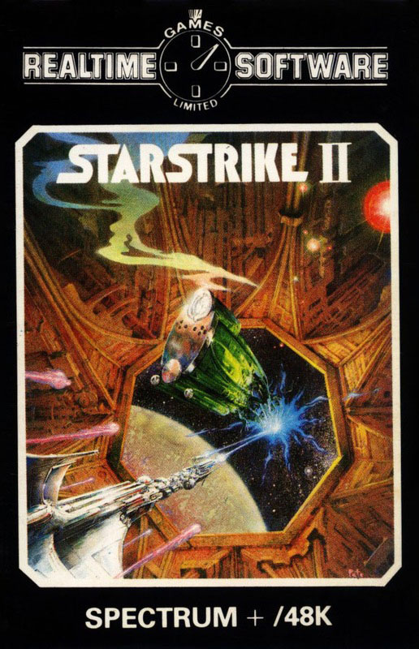
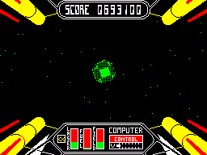
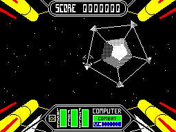

Starstrike II


{kind=link}

| Publisher: | Realtime Games Software Ltd |
| Price: | £7.95 |
| Year: | 1986 |
| Source: | CRASH, Issue 28 |

Nearly eighteen months after the fast 3D graphics in Starstrike stunned the Spectrum gamesplaying world, Realtime have released the sequel under the unassuming title of Starstrike II. The original game contained three screens of wire-frame animation and owed a fair debt to the Star Wars arcade game in terms of gameplay. Now Realtime have produced a game with filled-in 3D graphics and have come up with a totally different gameplay to go with them...
The scenario continues from the story told in Starstrike: after the Outsiders’ first attack was repelled by the Starstrike star fleet, the aliens regrouped back to their homeworlds to plot and hatch plans anew against the Federation. Understandably narked by the constant alien threat, the Federation decides that something has to be done. A new all-purpose fighter is designed, the Starstrike II series, and is sent off to the Outsiders’ homeworlds to neutralise each planet’s defences.
The Outsiders realise the Federation is out to get them, and their worlds are heavily defended. Your task as pilot of a Starstrike II ship is not trivial — there are twenty two planets on the neutralisation list, and these can be categorised into three different groups: Agricultural, Industrial and Military. Each type of planet has a different control system that is in charge of all the work droids on that world. Destroy the controller, and the planet becomes totally harmless.

The Outsider planets are spread across five star systems, and the first thing to do when play commences is to choose the star system on which to begin work. Your ship is not capable of hyperspace travel between star systems, and has a support module that carries fuel supplies. Once a star system has been selected, the support modules makes the hyperspace jump and your ship’s own hyperdrive jump can then be used to hop between planets in that system.
Your craft is equipped with the latest in shield, laser and computer technology and all you have to do is master the controls! Three meters on the control console are well worth keeping an eye on: fuel, shields and heat. Naturally, the fuel gauge reveals the level in the ship’s tanks. The shield display shows the strength level of the complex defence fields set up around your craft. The enemy ships are quite impressively equipped as well, and with no shields a direct enemy hit entails instant death — yours. The heat meter is directly linked to the laser cannon and automatically cuts the laser out if they get too hot. Not having much idea about space battle, the thermostat is more than likely to stop power to the guns when they’re needed most. The whole game is seen through the front window of your ship with the dashboard neatly laid out along the lower part of the display. Four laser cannon are grouped around the screen, firing onto a central sight, which is also used to steer your craft.
A variety of defence systems have to be overcome. The Space Wheel is only present on military and a few industrial worlds, and is a giant pentagonal structure protected by defence pods. The five pods on the perimeter of a Wheel have to be blasted off as the Wheel spins in space, advancing towards you. If all five pods are shot off, a door opens in the centre of the structure which gives access to a hangar. Matching the rotation of your craft with that of the wheel allows you to enter the hangar, where points can be collected for destroying the Outsider ship that lurks therein. To escape from the hangar and proceed to the next section of the game the three controllers that operate the irising exit door have to be shot away — careful timing is needed here, as the door remains in the position it reaches at the instant when the third door controller is destroyed.

Blow away all five, and you get the
chance to enter the hangar section.
All the Outsider planets are protected by Defence fields which consist of a number of gridded force barriers in space. Small openings in the force fields exist to allow Outsider craft to cross, but these entrances are obscured by spinning energy squares and are defended by missile systems. The more important the planet that you are attacking, the more Defence fields you have to penetrate — and they get progressively harder...
After crossing a planet’s Defence fields your craft goes into orbit and enters battle with the Outsider fleet defending the planet. A handy head up scanner system tracks the enemy, using two windows. The right hand window displays the relative vertical position of an object or ship in the vicinity, while the left hand window gives a plan view of the surrounding chunk of space. When an enemy craft comes within laser range, the scanner windows automatically flip off and combat begins.
Some Outsider ships release a fuel pod when they are destroyed and the pods can be collected to boost fuel supplies. You have to be quick to get these since Outsider fuel scoops zoom in and try to whip them away. Once the orbital fighters have been vanquished, it’s down to the planet and into the Ground Attack sequence, where a cross imposed over the planet’s surface targets the laser system. Points are awarded for destroying alien artefacts.
The Ventilation Duct is the next stage of the game, which is an upgraded version of the original trench sequence in Starstrike. Inside the duct the lasers are inoperative, and survival depends on your ability to dodge the trench constructions as collisions rapidly deplete shield energy. The usual left/right, up/down controls apply, with the fire button used in conjunction with up and down to accelerate and decelerate. Some careful driving is called for, as it’s impossible to manoeuvre while changing speed. Mobile beams cross your path, spinning fans hinder you and irising doors have to be negotiated before the exit to the trench appears and the last phase of the attack on a planet begins.
The last stage varies for the different types of planet, but the general idea is similar. Depending on the type of planet, a reactor system, battle computer or agricultural control centre has to be knocked out as you fly along a computer controlled course. A successful strike opens a door at the far end of the course, and the game returns to the planet selection screen with one more planet deactivated.
The balance between fuel and shield levels is critical, and at the end of the stage in the attack on a planet fuel can be transferred to the shields. There’s only one life in the game, and the mission ends if fuel or shields reach zero — and the galaxy will forever more be plagued by the Outsiders. Now that’s not something you want to happen is it?
CRITICISM
‘When Starstrike was released well over a year ago I was really impressed with the smooth moving vector graphics. Now Realtime have finally got round to doing the follow up. Starstrike II utilises filled in 3D graphics which move quite quickly. The game itself is an improvement over the original bringing the slightly worn shoot em up back up to date. The various stages can keep you amused for hours. I am amazed that the programmers could fit so much into the game while still keeping it graphically excellent. As with most shoot em ups Starstrike II is playable from the word go, but it’s hard enough to keep you coming back for more and more. Few programs have impressed me this much and I’m glad to see the return of a software house that can truly program games. Buy Starstrike II now. It’s guaranteed to provide you with hours and hours of fun.’
‘Starstrike II came as a real surprise. After seeing such releases as Elite and I, of the Mask it looked like three dimensional graphics had gone as far as was Spectrumly possible. Happily it looks like everyone was wrong, proven by Starstrike II’s appearance. Images this realistic, generated as fast as this just haven’t yet been seen on the Spectrum. Technolust aside, the game is great and holds your interest not just because of the way the graphics tend to get everyone oggling around the screen. There’s plenty of challenge to be had, however good you seem to get. And for a mere £7.95 you just can’t go wrong. Any Spectrum owner passing this by is likely to be mentally deficient!’
‘Starstrike II is a brilliant follow up to Starstrike and at £7.95 presents amazing value for money. Speed, as with all shoot em ups, is very important, and Realtime Software have not sacrificed speed at all in the cause of filled 3D graphics — I couldn’t find any bit where the game slowed down because the screen was too full. Just because there’s lots of amazing graphics doesn’t mean that the game is small: it consists of lots of stages, and every stage is as good as the last. My personal favourite was the trench stage, which contains some superb filled-in graphics and looks better than the arcade Star Wars game! Starstrike II has loads of good features, like the ‘on screen’ scanners disappearing when you encounter the enemy. There’s a host of different ships which are very detailed and neatly animated. Starstrike II is a game that every Spectrum owner should have on the shelf, and it represents fantastic value for money.’
COMMENTS
| Control keys: | Q/A up/down, O/P left/right, B, N, M, SYM SHIFT, SPACE fire, X accelerate, H head up displays on, J automatic head up displays, D dock |
| Joystick: | Kempston, Interface 2, Cursor |
| Keyboard play: | Responsive as ever |
| Use of colour: | Monochromatic, mainly, with shading to create 3D effect |
| Graphics: | Fast and cool — guaranteed to stun anyone who sees them |
| Sound: | Neat |
| Skill levels: | One |
| Screens: | Eight |
| General rating: | A brilliant game. |
| Presentation: | 94% |
| Graphics: | 97% |
| Playability: | 92% |
| Getting started: | 94% |
| Addictive qualities: | 94% |
| Value for money: | 96% |
| Overall: | 96% |